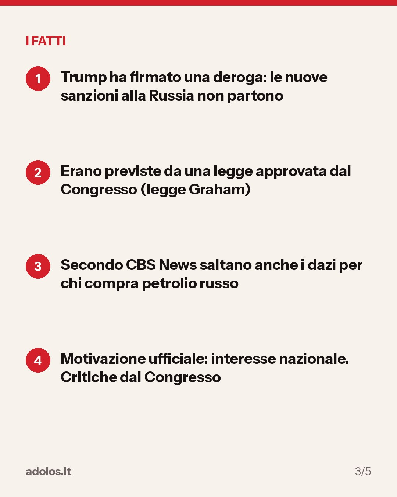
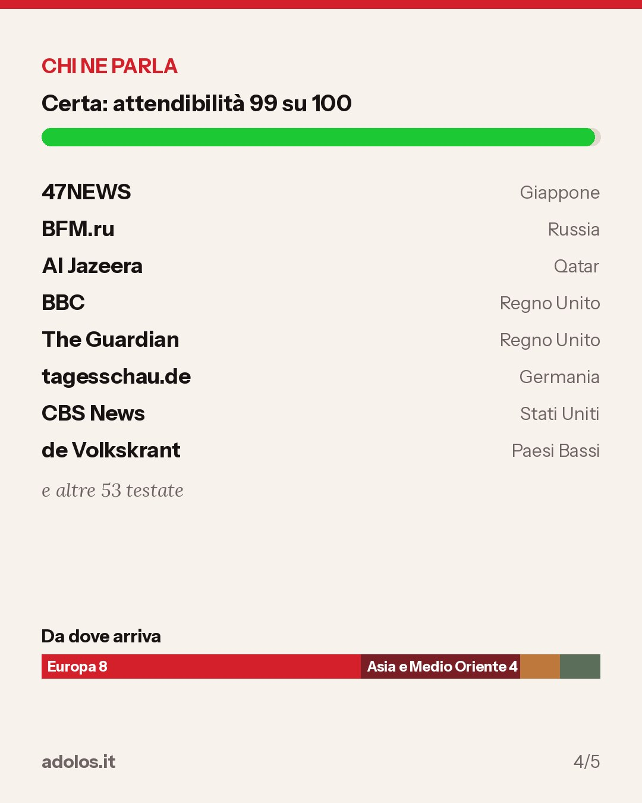

In breve
Il presidente degli Stati Uniti Donald Trump ha firmato una deroga che ferma le misure contro Mosca votate dal Congresso, poco prima della loro entrata in vigore. Secondo CBS News la decisione riguarda anche i dazi pensati per i paesi che acquistano petrolio russo. La Casa Bianca la motiva con l'interesse nazionale. Secondo de Volkskrant alcuni membri del Congresso parlano di tradimento verso l'Ucraina. La notizia è ripresa da testate di 14 paesi.
- Trump ha firmato una deroga: le nuove sanzioni alla Russia non partono
- Erano previste da una legge approvata dal Congresso (legge Graham)
- Secondo CBS News saltano anche i dazi per chi compra petrolio russo
- Motivazione ufficiale: interesse nazionale. Critiche dal Congresso


Come sta andando
- 03:34 Esce per prima su เดลินิวส์
- 03:34 Prima conferma da LINE TODAY, quasi in contemporanea
- Adesso 61 testate in 14 paesi
Chi ne parla
Europa9
Americhe2
Asia e Medio Oriente3
Africa0
Oceania0
Ripresa da 61 testate in 14 paesi: เดลินิวส์, 47NEWS, Європейська правда, BFM.ru e altre 57. La prima a darla è stata เดลินิวส์ (Thailandia), 17 ottobre 2026, ore 03:34.
Chi la riporta
- เดลินิวส์ da Thailandia, 17 ottobre 2026, ore 03:34
- 47NEWS da Giappone, 17 ottobre 2026, ore 03:52
- Європейська правда da Ucraina, 17 ottobre 2026, ore 07:19
- BFM.ru da Russia, 17 ottobre 2026, ore 09:19
- Al Jazeera da Qatar, 17 ottobre 2026, ore 09:38
- BBC da Regno Unito, 17 ottobre 2026, ore 10:03
- The Guardian da Regno Unito, 17 ottobre 2026, ore 10:04
- tagesschau.de da Germania, 17 ottobre 2026, ore 10:35
- CBS News da Stati Uniti, 17 ottobre 2026, ore 11:39
- de Volkskrant da Paesi Bassi, 17 ottobre 2026, ore 11:52
- Axios da Stati Uniti, 17 ottobre 2026, ore 11:59
- Corriere della Sera da Italia, 17 ottobre 2026, ore 12:18
- Sky TG24 da Italia, 17 ottobre 2026, ore 12:42
- Le Monde.fr da Francia, 17 ottobre 2026, ore 12:46
- LINE TODAY da Thailandia, 17 ottobre 2026, ore 03:34
- MGR Online da Thailandia, 17 ottobre 2026, ore 03:34
- RYT9 da Thailandia, 17 ottobre 2026, ore 03:34
- pptvhd36.com da Thailandia, 17 ottobre 2026, ore 03:34
- TBS NEWS DIG da Giappone, 17 ottobre 2026, ore 03:52
- Yahoo!ニュース da Giappone, 17 ottobre 2026, ore 03:52
- CNN.co.jp da Giappone, 17 ottobre 2026, ore 03:52
- 日本経済新聞 da Giappone, 17 ottobre 2026, ore 03:52
- Українська правда da Ucraina, 17 ottobre 2026, ore 07:19
- NV da Ucraina, 17 ottobre 2026, ore 07:19
- Korrespondent.net da Ucraina, 17 ottobre 2026, ore 07:19
- 24 Канал da Ucraina, 17 ottobre 2026, ore 07:19
- Meduza da Lettonia, 17 ottobre 2026, ore 09:19
- ВФокусе Mail da Russia, 17 ottobre 2026, ore 09:19
- Интерфакс da Russia, 17 ottobre 2026, ore 09:19
- Ведомости da Russia, 17 ottobre 2026, ore 09:19